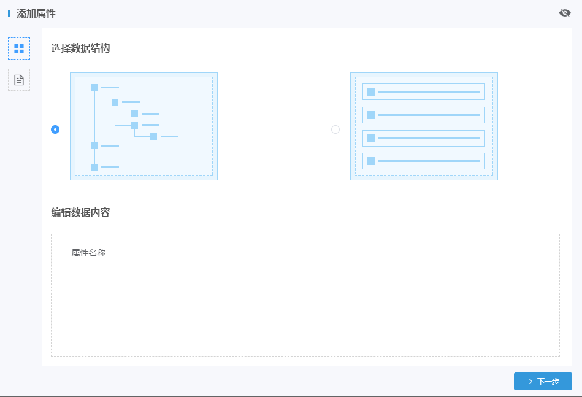

| 1. | 在主菜单中选择“预案大脑→数据源管理”菜单，内容显示区显示“数据源管理”页面。 |
| 2. | 单击页面右上角〖添加数据源〗按钮，弹出“添加属性”窗口。如Fig 7所示 Fig 7 添加属性

|
| 3. | 选择数据结构(树形或列表类型)，并编辑数据内容。
|
| 4. | 单击〖下一步〗按钮，进入“添加属性”窗口第二个页签。 |
| 5. | 依次设置数据源名称、描述、标签。 |
| 6. | 选择数据源背景。用户可以选择系统默认图片作为数据源背景图片，或单击〖选取文件〗按钮上传本地图片再选择该图片作为数据源背景图片，并单击〖确认〗按钮。 |
| 7. | 单击〖保存〗按钮，数据源添加完成。 |